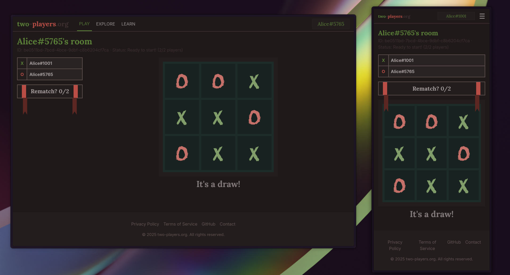

two-players.org
A small web platform for playing combinatorial games online, created while learning Sveltekit, Go and WebSockets.
Features
- Real-time gameplay with WebSockets
- Clean and responsive interface

Tech Stack
-
Backend: Go, PostgreSQL, WebSockets, sqlc, go-migrate
-
Frontend: SvelteKit, TypeScript, TailwindCSS, Bun
What I Learned
- Implemented real-time communication with WebSockets
- Managed database migrations using
go-migrate - Built a fullstack architecture with Go + SvelteKit
- Improved skills in designing responsive UIs with TailwindCSS
- Learned to build frontend applications using reusable components in Svelte
- Deployed the application on a VPS, strengthening my Linux and deployment skills